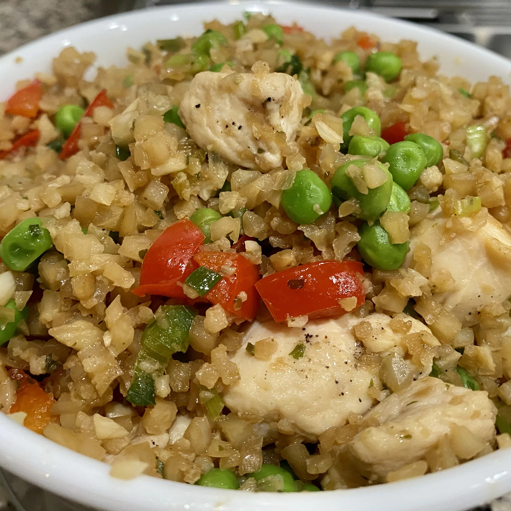

Garlic Chicken Fried Brown Rice

Description
Leftover brown rice is reborn in this chicken fried rice with peppers and onions. Black pepper, paprika, or dried
parsley may be used to season after this is cooked. This recipe takes around 20 minutes to prepare for. And
another 15 minutes to cook, taking 35 minutes overall. The quantity of given ingredients will yield 3 servings
of this recipe.
Nutrition content of this dish is given as: 444 calories; protein 24.3g; carbohydrates 57.4g; fat 12.8g;
cholesterol 43.1mg; sodium 701.4mg.
Ingredients
- Vegetable Oil, divided: 2 tablespoons
- Skinless, boneless chicken breast, cut into strips: 8 ounces
- Red bell pepper, chopped: 1/2
- Green onion, chopped: 1/2 cup
- Cloves Garlic, minced: 4
- Cooked brown rice: 3 cups
- Light soy sauce: tablespoons
- Rice vinegar: 1 tablespoon
- Frozen peas, thawed: 1 cup
Steps
- Heat 1 tablespoon of vegetable oil in a large skillet set over medium heat.
- Add the chicken, bell pepper, green onion and garlic.
- Cook and stir until the chicken is cooked through, about 5 minutes.
- Remove the chicken to a plate and keep warm.
- Heat the remaining tablespoon of oil in the same skillet over medium-high heat.
- Add the rice; cook and stir to heat through.
- Stir in the soy sauce, rice vinegar and peas, and continue to cook for 1 minute.
- Return the chicken mixture to the skillet and stir to blend with the rice and heat through before serving.
Odin's Menu